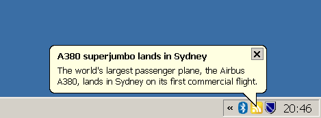

Roman Morawek
BalloonRSS - A Simple RSS Aggregator using Balloon Tooltips
Copyright (C) 2009, Roman Morawek
romor@users.sourceforge.net
http://balloonrss.sourceforge.net
http://sourceforge.net/projects/balloonrss
License: GNU General Public License, Version 3

Screenshot of BalloonRSS, showing an RSS item as a balloon pop-up.
BalloonRSS is a simple RSS reader that displays incoming messages as balloon tooltips in the windows task bar. The news entries themselves are linked to be read with the browser.
The messages are retrieved from a set of configurable RSS feed sites. The news entry to view next is selected by a pre-defined priority which is dynamically adapted according the user's interest, which is determined by the user's message click rate.
This program is free software; you can redistribute it and/or modify it under the terms of the GNU General Public License (GPL) as published by the Free Software Foundation; either version 3 of the license, or (at your option) any later version.
| last update: Roman Morawek |